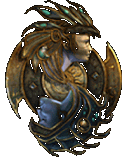
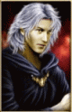
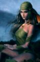
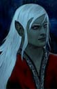

|  |
Mod Kim NPC for BG2 ToB, BG2EE and EETVersion 1.7 Last updated 29/10/2023 Required for BG2: - Throne of Bhaal - BG2FixPack (component "Core Fixes") |
 Grenouillebleue |
|
DESCRITPION : NPC for Baldur's Gate II, you can find her near Renald Bloodscalp. Incredibly beautiful, deliciously sensual... and terribly unnerving. Kim makes a detour to Athkathla. Can you tame her? Kim can have a romance with male humans, elves or half-elves. |
|
|
INSTALLATION : Extract the contents of the archive into your game directory Run Setup-Kim_NPC.exe Follow the prompts. |
 Kim |
|
 Akadis |